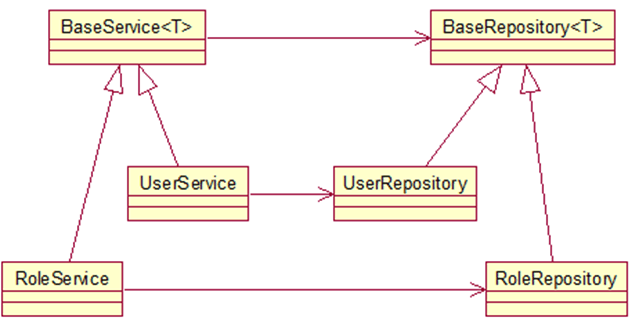

Spring4 添加了泛型依赖注入的功能。具体的，从下面这张图来看：

假使我们创建了两个泛型基类BaseService<T>和BaseRepository<T>，并分别进行了实现UserService<User>和UserRepository<User>，如果在泛型基类中存在如下代码：
|
|
而UserService<User>类仅仅实现了BaseService的接口，没有重写add方法：
|
|
UserRepository<User>与UserService<User>类似。将这些Bean交给spring IOC进行管理，创建main方法：
|
|
可以看到System.out.println(baseRepository);的输出结果是一个userRepository类。
由此可知，spring4自动将User类传入了baseRepository的继承类中。